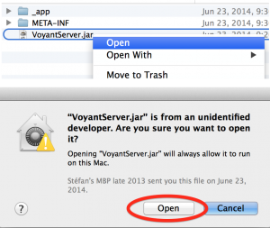
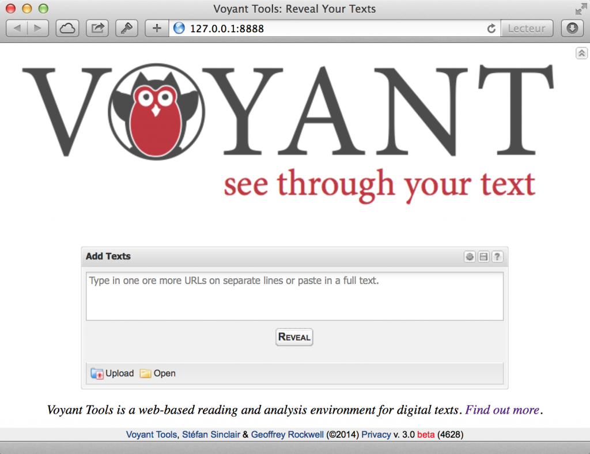
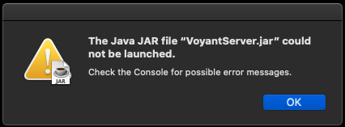

VoyantServer
VoyantServer is a standalone version of the Voyant Tools server that can be downloaded and run locally. This standalone version allows you to do your text analysis on your computer without depending on any internet connection. Thus, it means:
- You can keep your texts confidential as our server will not cache your work.
- You can restart the server if it slows down or crashes.
- You can handle large texts without the connection timing out.
- You can work offline (without an Internet connection).
- You can have a group of users (like in a workshop or class) run their instance without encountering load issues on our server.
This document outlines how to download, run, and control the server.
Setting up VoyantServer
Requirements
Ensure your computer has Java version 11. Java 11 can be downloaded from Adoptium or Oracle. Instructions for installing Java are available here: https://www.wikihow.com/Run-a-.Jar-Java-File. Here is another link for how to install Java: https://java.com/en/download/help/download_options.html
Downloading Voyant Server
- Go to https://github.com/voyanttools/VoyantServer/releases/latest
- Scroll down to the bottom and click on the VoyantServer.zip to download.
Preparing VoyantServer
First, go to the folder to which you downloaded VoyantServer.zip. The procedure for preparing VoyantServer is dependent on your computer's operating system (OS). Please see below and follow instructions for your respective OS.
- Mac: You can double-click on the downloaded VoyantServer.zip file to decompress it. This should create a directory in the same folder as the zip file with a similar name to the downloaded file.
- Windows: Extract the VoyantServer.zip onto the computer. You can do the extraction by right-clicking on the VoyantServer.zip and then click on "Extract All..."
- Linux: You can double-click on the VoyantServer.zip file to decompress it. This should create a directory in the same folder as the zip file with a similar name to the downloaded file.
Once you decompress the .zip file, you should see something like the following:
_app: this is the actual web application – you shouldn't need to view this folder's contents
License.txt: this is the license for the VoyantServer
META-INF: this is a part of the VoyantServer architecture – you shouldn't need to view this folder's contents
README.md: this includes some of the same documentation as on this page
server-settings.txt: this is an advanced way to set server options, including the port and memory defaults
VoyantServer.jar: this is the most important file, the one you'll click to start the server
Running VoyantServer
-
Open the folder you just decompressed or extracted.
-
To start VoyantServer, you need to run the
VoyantServer.jarfile. This Java Archive file is a package with all the resources needed to run the server (including an embedded Jetty server). To run this, you need to have Java installed. Note that the approach for runningVoyantServer.jaris OS-specific. Please see below for the method that suits your computer's OS.-
Mac:
- You should right-click (control-click) on the
VoyantServer.jarfile and choose "Open" from the menu. - Click on "Open" in the next dialog. This is necessary the first time only. For subsequent uses of VoyantServer, all you need to do is double-click on the
VoyantServer.jarfile. {@img 01.png Open} - If the clicking on
VoyantServer.jarfails, use the command-line approach below.
- You should right-click (control-click) on the
-
Windows / Linux:
- You should be able to run VoyantServer by double-clicking on the
VoyantServer.jarfile
- You should be able to run VoyantServer by double-clicking on the
-
Command-line:
- It should also be possible to launch the application from the command-line if you're at the prompt in the same folder as the jar file:
java -jar VoyantServer.jar
- It should also be possible to launch the application from the command-line if you're at the prompt in the same folder as the jar file:
-
Once you run VoyantServer, you will see a control panel like the images below:


Typically, VoyantServer will also automatically launch your browser with the Voyant Tools home screen, where you can define a text and get started.

Controlling VoyantServer
From the VoyantServer control panel you can:

(1) Stop Server / Start Server: This button's label will depend on the state of VoyantServer – it will be disabled if it is in the process of starting up the VoyantServer. It will say Stop Server if VoyantServer is already running and Start Server if it isn't. You can stop VoyantServer if it fails to work as expected and then restart it. Note: You should always use the Stop Server button to quit the program, as it helps to release allocated resources. Otherwise, re-launching VoyantServer may not work.
(2) Open Web: You can open your default web browser with the Voyant Tools entry page that connects with this server. By default, the URL will be http://127.0.0.1:8888. You can always connect with a local server by typing this into the URL field of your browser if you want to use another browser.
(3) File -> Exit: You can quit the VoyantServer application.
(4) Help: You can access the help page for the VoyantServer from the Help menu.
(5) Port: You can change the port that is used by the server (the default is port 8888). Typically, this won't need to be changed – it's not recommended to make changes here unless you need to and know what you're doing. If the port specified is already in use, you can try a slightly different one, 8889, for instance.
(6) Memory: You can increase the memory (in megabytes) allocated to the VoyantServer if you are analyzing large texts. Make sure you stop and restart the server for the new memory setting to take effect. The default is 1024 (MB).
Troubleshooting VoyantServer
-
If VoyantServer fails to start by clicking on the
VoyantServer.jarfile, use the command-line approach below, or if you get an error message that looks like the image below, you can solve the problem by launching the application from the command-line. - Make sure you are in the same folder or directory as the
VoyantServer.jarfile. - If you are on the command-line and in the same folder as the jar file, then copy and paste
java -jar VoyantServer.jarinto your command-line. - Press "Enter" to open VoyantServer.
- Make sure you are in the same folder or directory as the
-
Port in Use Error: If you get a message that reads:
Port#8888 appears to be in use already. It means your VoyantServer did not exit properly. Try the following steps to resolve the issue.The server, in this case, is running. But it can be hard to stop and restart. One option is to change the port (to 8889) and launch another server. But each time you launch a new server, more memory is being used. Another option is to restart your computer – that will clear existing processes. If you know what you're doing, you can also use the command line to find the process and kill it:
ps aux | grep jetty kill -9 [process id]

- Site won't load: If VoyantServer does not automatically launch your browser after running
VoyantServer.jar, it could be one of two issues.- The selected port is currently being used by another application or at capacity. Try exiting the application and opening it again. Changing the port may help fix this issue as well.
- If Stop Server is greyed out and the browser does not automatically load, exit the application, and try launching it again. This should fix the issue. You can also try to end the process from the Task Manager if the above approach fails.
Please let us know if you encounter other issues with VoyantServer. Send an email to VoyantTools